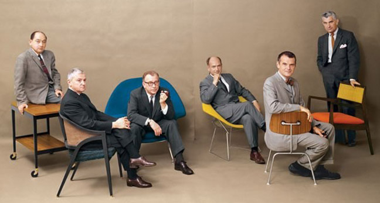
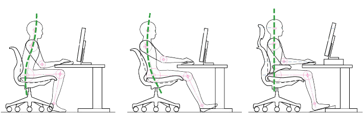

.png)
How do we sit with the modern chair?
A brief history of the modern chair
Although the designs of the mid-century era were wide-ranging in style, they often shared such characteristics as clean lines, organic shapes, and functionality. In the United States, designers adopted the improved technologies and materials coming out of World War II. They embraced mass production and frequently used fibreglass, bent plywood, aluminum, steel, foam, and plastic laminates. Read more...
Ergonomics: How chair design has helped shape better posture
Ergonomics is a science, also known as human engineering or biotechnology. The discipline involves looking at how objects can be designed and/or arranged to best compliment easy and safe human interaction. An ergonomic chair, for example, is a chair that has been designed to best support the human body, including considerations like posture, comfort, support and health. Read more...
Iconic designs of mid-century modern chairs
Mid-century furniture rejected the detailed and extravagant designs that had been popular for centuries prior. A new air of minimalism captured the minds of furniture designers in Europe and the United States. Suddenly, it was no longer in fashion to have older chairs in the house. As the post-war period saw an increase in mass production of household goods, many furniture pieces were able to be produced at lightning speeds compared to the past.
Many mid-century designers preferred to create chairs that blended form and function. The modernist furniture movement ushered in a new wave of simplistic, functional design married with a striking, sleek appearance. Let's take a look at some of the most iconic mid-century modern chairs that continue to be adored today. Even though most of these original designs are quite expensive, it's clear that Ikea was greatly influenced by these chairs in their mass-market furniture retail business. Read more...